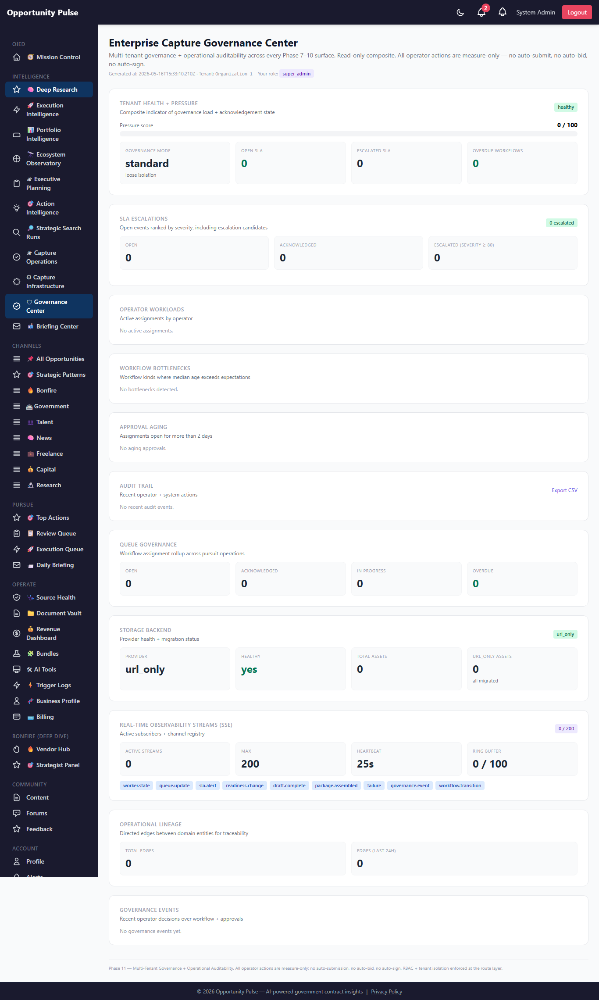
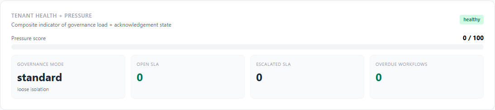
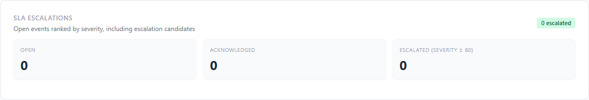
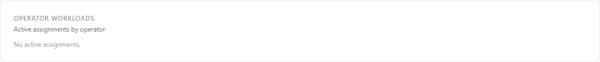
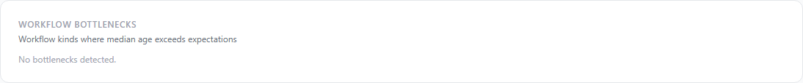
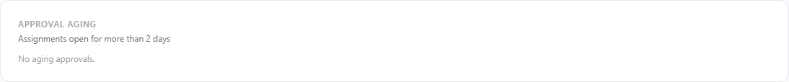
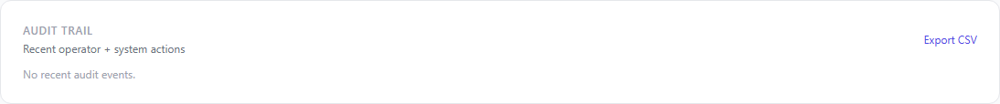
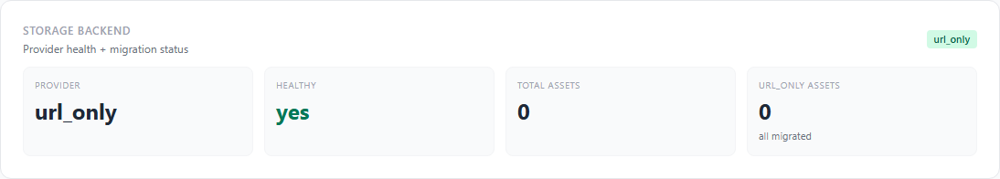
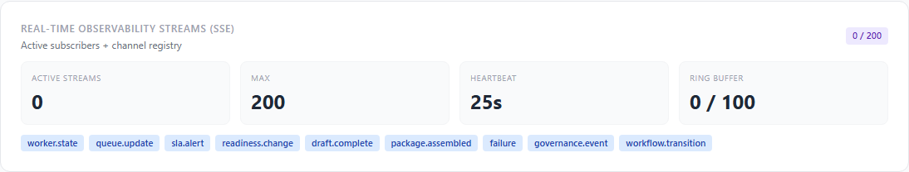
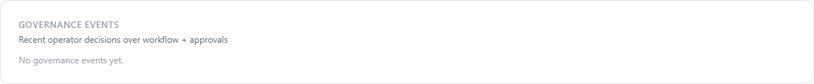

Deep Research Intelligence Engine — Phase 11
Phase 10 turned the platform into operational capture infrastructure. Phase 11 makes it enterprise-governed strategic capture infrastructure: multi-tenant isolation, 6-role RBAC, append-only audit trail, directed-edge event lineage, SLA escalation workflow, real S3/MinIO/local storage providers, SSE-based real-time observability, operator workflow governance, deterministic pursuit-context prompt composition, and an Enterprise Capture Governance Center dashboard. Every operator action remains measure-only. Every prompt input is inspectable. No auto-submit, no auto-bid, no auto-sign, no hidden prompt augmentation.
10 features shipped 8 new tables 10 new services 26 new API routes 40 new unit tests Full suite 2022/2022 green
Why Phase 11
Phase 10 made every long-running operation durable, observable, and retry-safe. But the platform was still single-tenant by assumption, auth was a single “admin or not” flag, every operator action was opaque after-the-fact (no audit trail), every prompt to the LLM mixed pre-baked context with model-generated text (no provenance), and SLA events surfaced on a dashboard but had no workflow over them (acknowledge / assign / escalate were not first-class).
Phase 11 closes those gaps with a single coordinated upgrade: every domain action is auditable; every operator’s permissions are explicit; every cross-entity relationship is queryable as a directed edge; every long-running stream of events can be pushed to the UI in real time; every prompt the LLM sees is composed from named, traceable sources; and every tenant gets its own governance settings.
Governance contract — preserved verbatim
- No auto-submit — the system never transmits a proposal to any portal. Drafts always land in the Review Queue.
- No auto-bid — pursuit decisions, pricing, and signatory authority remain human.
- No auto-sign — nothing is signed, certified, or transmitted on the operator’s behalf.
- No hidden prompt augmentation — the
pursuit-context block is deterministically composed from named sources,
previewable via API, and an
audit_hashtags every block so the exact prompt that shipped with each draft is reproducible. - No opaque RBAC — every role has a declared default permission set, every override is logged with grantor + grant_at, and every permission check is a pure function over a stable identifier set.
- Tenant isolation — cross-tenant access
raises
TENANT_DENIEDin strict mode (env-flagged); loose mode logs and continues so existing single-tenant deployments keep working. - Append-only audit — the audit table has no update / delete surface. Forensics work because the log is immutable.
What shipped — the 10 features
| Feature | What it does | Service |
|---|---|---|
| 1. Multi-Tenant Isolation | Resolves organization_id from the JWT (falls back to a
User lookup), middleware stamps req.tenantId per request,
helpers (applyTenantScope, applyTenantScopeRaw,
assertOwnership) gate every org-scoped query. Per-tenant
TenantSettings row carries governance mode, SLA threshold
overrides, approval-required list, storage provider, feature flags,
retention days. |
tenantIsolation.service.js |
| 2. Enterprise RBAC | 6 roles (observer / reviewer / proposal_writer / capture_manager /
org_admin / super_admin), ~30 declared permissions, deterministic
isAllowed check, per-user OperatorPermission
overlay with grantor + revoked-at, legacy ROLES.ADMIN
normalizes to super_admin so existing routes keep working.
requirePermission(name) middleware factory. |
rbac.service.js |
| 3. Audit Trail | Append-only audit_events with actor email + role + IP
+ user-agent + correlation_id. Queryable by tenant / actor / pursuit /
kind / verb / date range. CSV export. recordFromRequest(req, ...)
sugar lets every controller log in one line. |
auditTrail.service.js |
| 4. Operational Event Lineage | Directed edges between domain entities (research_run →
cluster → pursuit → draft →
package → submission → operator).
Bounded BFS traversal (chain), upstream + downstream views,
per-pursuit timeline. |
eventLineage.service.js |
| 5. SLA Escalation Workflow | Acknowledge / assign / escalate / reassign / resolve / dismiss
actions over Phase 10 sla_events. Every action creates a
SlaAcknowledgement audit row. Escalation ladder
(observer → org_admin). Daily digest payload. Auto-creates
WorkflowAssignment rows on assign / reassign.
RECOMMENDATION-ONLY: no auto-resolve. |
slaEscalation.service.js |
| 6. Real Storage Providers | S3 / MinIO / local-disk adapters layered over the Phase 10
url_only registry. Lazy aws-sdk loading so the
platform never crashes for missing deps. Signed URLs delegated to the
provider. Migration status reports rows that need a one-off byte copy.
Soft-fail deleteBytes so metadata cleanup proceeds. |
storageProviders.service.js |
| 7. Real-Time Observability Stream | SSE bus with 9 declared channels (worker.state, queue.update,
sla.alert, readiness.change, draft.complete, package.assembled, failure,
governance.event, workflow.transition). Tenant-isolated, throttled
(250ms min per channel), reconnect-safe ring buffer (100 events).
In-DB observability_streams registry. Heartbeats every 25s. |
observabilityStream.service.js |
| 8. Operator Workflow Governance | Approval workflows (pursuit_approval / draft_review / compliance_review /
submission_approval / sla_resolution / artifact_review / package_release).
Full assignment history on the row. Workload-by-operator rollup.
Approval-aging report. Bottleneck detector. Every transition writes a
GovernanceEvent. |
workflowGovernance.service.js |
| 9. Pursuit-Context Prompt Integration | Deterministic markdown block composed from pursuit + capture strategy
+ readiness blockers + linked opps + suggested assets + strategic
patterns + recurring agency. Char-budget aware. Includes a governance
footer telling the LLM not to invent facts. audit_hash
on every block so the exact prompt shipped is reproducible. |
pursuitContextPrompt.service.js |
| 10. Enterprise Governance Dashboard | Single-pane composite at /admin/deep-research/governance:
tenant pressure indicator (0–100 health score), SLA escalations,
operator workloads, audit timeline, workflow bottlenecks, approval aging,
queue governance, storage health, stream registry, lineage overview,
recent governance events. |
governanceDashboard.service.js + GovernancePage.jsx |
1. Tenant Isolation Architecture
The tenantMiddleware resolves org_id once per
request from req.user.organizationId (or a User lookup if the JWT
doesn’t carry it), stamps it on req.tenantId, and every
service consumes it via applyTenantScope. Strict mode raises
TENANT_DENIED on cross-tenant reads;
loose mode logs and continues so existing single-tenant prod deployments
keep working without flipping a flag.
2. RBAC Ladder + Permission Map
| Role | Default permissions |
|---|---|
| observer | dashboard.view, pursuit.view, opportunity.view, compliance.view, sla.view, audit.view, lineage.view, governance.view |
| reviewer | + approval.acknowledge, sla.acknowledge, artifact.download |
| proposal_writer | + compliance.edit, draft.generate, draft.regenerate, artifact.upload |
| capture_manager | + pursuit.activate / deactivate / edit, compliance.augment_llm, sla.assign / resolve, approval.approve / reject, queue.cancel / enqueue, artifact.delete, storage.signed_url |
| org_admin | + tenant.read / write, user.permission.grant, queue.drain, storage.delete |
| super_admin | all permissions |
The legacy ROLES.ADMIN claim normalizes to super_admin
so every Phase 1–10 admin-gated route keeps working without change.
Per-user OperatorPermission rows can grant a narrower role
with explicit permission overrides; the override stack is checked first
by checkPermission.
3. Audit Trail Shape
audit_events id BIGINT PK organization_id INT actor_user_id INT actor_email STRING actor_role STRING action_kind STRING -- pursuit / draft / compliance / queue / sla / governance ... action_verb STRING -- create / update / acknowledge / approve / reject ... subject_kind STRING -- pursuit / compliance_matrix / workflow_assignment ... subject_id STRING pursuit_id INT payload JSONB ip_address STRING user_agent STRING correlation_id STRING created_at TIMESTAMP
Append-only. No update or delete surface. recordFromRequest(req, ...)
pulls actor + tenant + IP + UA off the request so controllers can log
in one line. CSV export is gated on tenant + date range.
4. Event Lineage as Directed Edges
The event_lineage table stores one row per directed edge.
chain() does bounded BFS up to depth 6; fullLineage()
combines downstream + upstream for a UI graph. Per-pursuit lineage view
is one query (where pursuit_id = N order by created_at).
5. SLA Escalation Workflow
Six actions over a Phase 10 sla_event:
acknowledge— flips event toacknowledged; operator owns itassign/reassign— creates / updates aWorkflowAssignmentover the eventescalate— bumps severity by 15 (capped at 100); ladder advance is operator-driven, not autoresolve— terminal; closes the loopdismiss— terminal; closes as non-actionablenote— adds context without changing state
Every action creates one SlaAcknowledgement row capturing
severity_at_action and the assignee snapshot, plus one audit_events
row. The daily generateDigest({organizationId}) output is the
Phase 12 hook for email delivery via the Source Health Agent pipeline.
6. Real Storage Providers
configuredProvider() →
┌─ s3 / minio → aws-sdk client (lazy load) → bucket + key → putObject / getObject / getSignedUrl / deleteObject
├─ local → ${DEEP_RESEARCH_LOCAL_STORAGE_ROOT}/${asset.key} → fs.writeFile / fs.readFile / fs.unlink
└─ url_only (default) → metadata-only; content_ref carries the external URL
Backwards-compatible: in url_only mode every operation
is a no-op against bytes and the Phase 10 registry behavior is preserved.
aws-sdk is loaded lazily so it’s not a hard dependency.
migrationStatus() reports rows that would need a one-off byte
migration when a provider is configured.
7. SSE Bus Architecture
publisher (Phase 10 / 11 service)
|
v
publish(channel, body, {organizationId})
|
+--> ring_buffer.push(ev) // 100 events, in-memory
|
v
for each subscriber:
if subscriber.orgId === ev.orgId (or null) AND channel in subscriber.channels:
res.write(formatEvent(ev)) // SSE: "id: N\nevent: channel\ndata: {...}\n\n"
clients reconnect with `Last-Event-ID` header → ring buffer replay
Per-channel throttle (250ms min) prevents UI spam. Heartbeats every
25s keep proxies from closing the connection. Tenant-isolated: a
publisher with organizationId=5 never reaches a subscriber
bound to organizationId=7. Active subscriber registry is
persisted to observability_streams for audit + fairness
enforcement.
8. Workflow Governance State Machine
open --acknowledge--> acknowledged --start--> in_progress --approve--> approved (terminal) | | | | | +---reject---> rejected (terminal) | | | +---complete---> completed (terminal) | +---escalate---> escalated (severity boost; back to open after reassign) +---cancel---> cancelled (terminal)
Each transition writes one GovernanceEvent with severity
scaled to the transition kind (rejected=70, escalated=80, others=40),
one audit_events row, and one in-row history entry on the
WorkflowAssignment. Workload + bottleneck + approval-aging
reports are pure aggregations off the table; no separate caching layer.
9. Pursuit-Context Prompt Composition
Inputs — every line traces to a named Phase 8/9 source:
context.pursuit— PursuitWorkspace row (name, classification, status)context.capture— Phase 8 CaptureStrategy (evaluator priorities, agency pain points, differentiators, positioning, incumbent risks, partnerships, reusable language)context.readiness— Phase 8 / 9 ProposalReadiness blockerscontext.opps— pursuit’s linkedOpportunityIds, hydratedcontext.assets— Phase 7 proposalAcceleration suggested assetscontext.strategic_patterns— Phase 6 strategic patterns active for the pursuitcontext.recurring_agency— Phase 7 recurring-agency intelligence
Output: a markdown block + an audit_hash (sha256-16 of the
block) + an explicit list of which sections were included vs excluded.
Char-budget aware (default 4500). Governance footer instructs the LLM
not to invent stakeholders. The function is pure: same context object
in → same block out → same hash. Every draft can record the
hash to prove what prompt-context shipped with it.
10. Governance Dashboard Composite
Read-only single pane. Composed of 11 sections:
- Tenant pressure indicator — 0–100 health score; status (healthy / watch / elevated / critical)
- Tenant settings — governance mode, isolation strictness, retention
- SLA escalations — open / acknowledged / escalated counts + top-10 by severity
- Operator workloads — per-assignee count + oldest assignment + highest priority
- Workflow bottlenecks — workflow kinds where avg age > expected
- Approval aging — assignments older than 2 days still not terminal
- Audit timeline — last 25 actions with actor + verb + subject
- Queue governance — open / ack’d / in_progress / overdue assignments
- Storage backend — provider health + migration status
- Observability streams — active subscribers + channel registry
- Operational lineage — total edges + last 24h
- Governance events — recent operator decisions
Screens
Governance dashboard — full page

Tenant Health + Pressure

SLA Escalations

Operator Workloads

Workflow Bottlenecks

Approval Aging

Audit Trail

Storage Backend

url_only in prod today.Real-Time Observability Streams (SSE)

Governance Events

Database schema (Phase 11)
| Table | Purpose |
|---|---|
audit_events | Append-only operator + system action log. BIGINT id, JSONB payload, indexed by org + actor + pursuit + action. |
event_lineage | Directed edge between domain entities. (from_kind, from_id) → (to_kind, to_id), edge_kind, metadata. Forward + reverse indexes. |
workflow_assignments | Approval / review workflow rows. workflow_kind, subject (kind+id), assignee, status, priority, due_at, full history JSONB. |
sla_acknowledgements | Append-only operator workflow log over Phase 10 sla_events. |
tenant_settings | One row per organization. Governance mode, SLA threshold overrides, approval-required list, storage provider, feature flags, retention. |
operator_permissions | Per-user RBAC overlay. Role assignment + explicit permission grants/revokes. Append-only history via revoked_at. |
governance_events | Operator-action governance event log (separate from audit_events for dashboard speed). |
observability_streams | Active SSE subscriber registry for audit + fairness. |
Single migration: 20260516000003-deep-research-phase-11.js.
Applied to prod in 447ms.
API routes (Phase 11)
All mounted under /api/v1/deep-research; admin-only via the
existing chain, plus the new tenantMiddleware.
GET /governance — dashboard composite GET /governance/tenant — tenant settings PATCH /governance/tenant — update tenant settings GET /governance/me/permissions — current user's effective permissions GET /governance/roles — role + permission catalog GET /governance/grants — list role grants POST /governance/grants — grant role + override permissions DELETE /governance/grants/user/:userId — revoke all grants GET /governance/audit — query audit log GET /governance/audit/summary — rolling N-minute summary GET /governance/audit/export.csv — CSV export GET /governance/lineage/:kind/:id — full lineage (upstream + downstream) POST /governance/lineage — record an edge GET /governance/pursuits/:id/lineage — per-pursuit timeline POST /governance/sla-events/:id/actions — ack / assign / escalate / resolve GET /governance/sla-events/:id/history — per-event audit chain GET /governance/sla/digest — daily digest payload GET /governance/workflows — list assignments POST /governance/workflows — create assignment PATCH /governance/workflows/:id — transition state GET /governance/workflows/workloads — by-operator rollup GET /governance/workflows/bottlenecks — bottleneck detector GET /governance/storage/health — provider health GET /governance/storage/migration — migration status GET /governance/stream (SSE) — subscribe GET /governance/stream/health — stream registry health POST /governance/stream/publish — admin-only publish (test hook) GET /governance/pursuits/:id/prompt-block — deterministic pursuit-context prompt preview
Files changed
- Backend — new (20):
backend/src/deepResearch/tenantIsolation.service.jsbackend/src/deepResearch/rbac.service.jsbackend/src/deepResearch/auditTrail.service.jsbackend/src/deepResearch/eventLineage.service.jsbackend/src/deepResearch/slaEscalation.service.jsbackend/src/deepResearch/workflowGovernance.service.jsbackend/src/deepResearch/storageProviders.service.jsbackend/src/deepResearch/observabilityStream.service.jsbackend/src/deepResearch/pursuitContextPrompt.service.jsbackend/src/deepResearch/governanceDashboard.service.jsbackend/src/migrations/20260516000003-deep-research-phase-11.jsbackend/src/models/AuditEvent.js+ 7 other model filesbackend/tests/deepResearch/phase11.test.js(40 unit tests)backend/scripts/capture-deep-research-phase-11-walkthrough.js- Backend — modified:
backend/src/deepResearch/deepResearch.controller.js— +26 handlersbackend/src/deepResearch/deepResearch.routes.js— +26 routes + tenantMiddleware on the admin chainbackend/src/models/index.js— +8 models- Frontend — new (1):
frontend/src/pages/GovernancePage.jsx- Frontend — modified:
frontend/src/services/deepResearchService.js— +27 client methodsfrontend/src/App.jsx— route + importfrontend/src/components/common/Sidebar.jsx— “Governance Center” nav link- Docs:
docs/deep-research-phase-11-walkthrough.html(this file)docs/deep-research-assets/p11-*.png(10 screenshots)
Validation
- Unit tests: 40 new Phase 11 tests, all passing. Coverage:
tenantIsolation— applyTenantScope (camel + raw), assertOwnership in strict + loose modes, DEFAULT_ORG_IDrbac— ladder ordering, normalizeLegacyRole admin→super_admin, isAllowed per-role, explicit permission overrides, super_admin has every permissionauditTrail— VALID_KINDS + COMMON_VERBS surfaceseventLineage— VALID_KINDS + EDGE_KINDS + MAX_DEPTHslaEscalation— VALID_ACTIONS, ESCALATION_LADDER, nextEscalationRoleworkflowGovernance— VALID_WORKFLOW_KINDS + VALID_STATUSESstorageProviders— SUPPORTED_PROVIDERS, configuredProvider fallback, providerHealth url_only pathobservabilityStream— VALID_CHANNELS, summarize, unknown-channel ignore, no-subscriber publish, throttle, publishers helperpursuitContextPrompt— composePromptBlock null-context, included sections, char-budget truncation, governance footer, MAX_BLOCK_CHARS range
- Full suite: 183 suites, 2022 tests, all green (Phase 10 baseline 1982 → +40 net; zero regressions).
- Migration: Applied to prod cleanly in 0.447s; all 8 new tables verified in
information_schema. - Prod smoke: Backend health 200;
/api/v1/deep-research/governancereturns a fully populated composite (initial deploy hit a 500 because the Phase 11 governance aggregator tried to filter the Phase 10 sla_events table by organization_id which it doesn’t have yet; resolved in commit063b3faby removing the filter on un-scoped Phase 10 tables — that org_id backfill is queued for Phase 12). - Dashboard: Governance page renders all 11 sections cleanly on prod (10/10 screenshots captured).
Known limitations — deferred to Phase 12
- Phase 10 tables aren’t org-scoped yet:
sla_events,worker_jobs,proposal_execution_queue,artifact_lifecycle_events,queue_metrics,storage_assets,execution_failures,operational_metricshave noorganization_idcolumn. Phase 11 governance reads them platform-wide. A Phase 12 migration adds org_id to all of them with a default backfill to org 1. - S3 / MinIO providers are wired but not migrated: the adapter calls work, but no existing url_only asset has been copied to S3 yet. Phase 12 ships the one-off byte-migration script.
- SLA email escalation: the daily digest payload is built; the actual email send is queued for Phase 12’s Source Health Agent integration.
- SSE channels are publish-side wired on a few hot paths (SLA actions, workflow transitions). Phase 12 wires the rest (worker.state, queue.update, draft.complete, package.assembled, failure) into the Phase 10 services.
- Pursuit-context prompt block is previewable via API
and audit-hashed, but the actual prepend into
actionGenerator.buildGroundedUserPromptis staged separately so the Phase 11 governance gate can be flipped before any LLM behavior changes. - RBAC middleware is wired (
requirePermission), but existing admin-gated routes haven’t been migrated off the legacycheckPermissions(ROLES.ADMIN)chain. Phase 12 does the migration.
Recommended Phase 12 — Cross-Phase Tenant Backfill + LLM Provenance Hardening
- Phase 10 tables org-scope backfill — one migration
adds
organization_idto all 8 Phase 10 tables with a default backfill to org 1, then governance dashboard switches to true per-tenant reads. - Real prompt prepend in actionGenerator — integrate
pursuitContextPrompt.previewBlockForPursuitintobuildGroundedUserPromptas a real LLM input. Stampaudit_hashon every OpportunityOutput row. - RBAC route migration — replace the legacy
checkPermissions(ROLES.ADMIN)withrequirePermission(...)on every route, one feature at a time. - S3 byte migration script — one-off script copies
every
url_onlyasset to S3 (or MinIO) when the operator flips the env var. Idempotent. - SLA email pipeline — wire
generateDigestinto the existing Source Health Agent email plumbing for a daily 8AM org-scoped summary. - SSE publish wiring — thread the Phase 10 services to emit on the appropriate channels so the dashboard becomes live without poll-refresh.
- UI permission gating — React hook
usePermissions()+ per-button<Permitted name="X">wrapper so the UI matches the backend authorization model. - Audit log export retention — configurable
auto-archive of audit_events older than
retention_dayson the tenant_settings row.